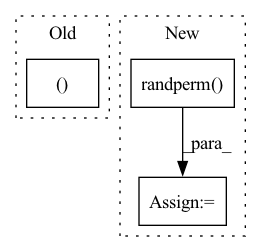

Pattern ID :10664
Before Change
dataset = MNIST(root="./data", download=True)
DATA_SPLIT = [50000, 10000]
train_data, test_data = random_split(dataset.data.float().unsqueeze(dim=1), DATA_SPLIT)
train_label, test_label = random_split(dataset.targets, DATA_SPLIT)
train_loader = DataLoader(dataset=MNISTDataset(train_data, train_label),
batch_size=100,
num_workers=4)After Change
// Load data
TRAIN_SIZE, TEST_SIZE = 50000, 10000
dataset = MNIST(root="./data", download=True)
random_indices = torch.randperm( 60000)
BATCH_SIZE = 100
train_loader = DataLoader(
dataset=TensorDataset(
dataset.data.index_select(dim=0, index=random_indices[:TRAIN_SIZE]),In pattern: SUPERPATTERN
Frequency: 4
Non-data size: 3
Instances Fragment ID: 36884851
Project Name: riroaki/capsnet
Commit Name: 408b1e77f4e40589def9c313c0b11beaa88f2108
Time: 2020-03-08
Author: aki@akideMacBook-Pro.local
File Name: main.py
M Class Name: AnonimousClass
N Class Name: AnonimousClass
M Method Name: main(0)
N Method Name: main(0)
M Parent Class:
N Parent Class:
M File Name: main.py
N File Name: main.py
M Start Line: 25
M End Line: 75
N Start Line: 12
N End Line: 75
Before Change
def main(args):
pyro.set_rng_seed(args.seed)
x, y = get_tf_data()
print("xy", x.shape, y.shape)
After Change
// Choose an initial batch.
complete_size = len(complete_experiment["response"])
complete_ids = torch.randperm( complete_size) [: args.sequences_per_batch]
experiment = {k: v[complete_ids] for k, v in complete_experiment.items()}
// Perform first active learning step. Fragment ID: 36884848
Project Name: pyro-ppl/pyroed
Commit Name: 30d37de98d72df2a585989fab05eb08b2b071381
Time: 2021-10-18
Author: fritz.obermeyer@gmail.com
File Name: tf8.py
M Class Name: AnonimousClass
N Class Name: AnonimousClass
M Method Name: main(1)
N Method Name: main(1)
M Parent Class:
N Parent Class:
M File Name: tf8.py
N File Name: tf8.py
M Start Line: 82
M End Line: 83
N Start Line: 34
N End Line: 66
Before Change
evalIndex = indexList[int(n_data*0.6):int(n_data*0.8)]
testIndex = indexList[int(n_data*0.6):int(n_data*0.8)]
return trainIndex, evalIndex, testIndex
def get_train_data(self):
pass
After Change
def get_idx(self, validation=True):
ratingsGraph = self.g_1
n_edges = ratingsGraph.num_edges()
random_int = th.randperm( n_edges)
train_idx = random_int[:int(n_edges*0.6)]
val_idx = random_int[int(n_edges*0.6):int(n_edges*0.8)]
test_idx = random_int[int(n_edges*0.6):int(n_edges*0.8)]
Fragment ID: 36884849
Project Name: bupt-gamma/openhgnn
Commit Name: c659d9bfe018a9cc070bb0fdfd1a41b59760c47f
Time: 2021-09-07
Author: 34649403+Theheavens@users.noreply.github.com
File Name: openhgnn/dataset/RecommendationDataset.py
M Class Name: KGCN_Recommendation
N Class Name: KGCN_Recommendation
M Method Name: get_idx(2)
N Method Name: get_idx(2)
M Parent Class: RecommendationDataset
N Parent Class: RecommendationDataset
M File Name: openhgnn/dataset/RecommendationDataset.py
N File Name: openhgnn/dataset/RecommendationDataset.py
M Start Line: 32
M End Line: 39
N Start Line: 32
N End Line: 38
Before Change
neighbors_khop.append(k_neighbor)
return self.features[self.mask][index].unsqueeze(-2), self.labels[self.mask][index], neighbors_khop
else:
return self.features[self.mask][index].unsqueeze(-2), self.labels[self.mask][index], neighbor
def get_neighbor(self, ids):
return self.features[self.dst[self.src==ids]].unsqueeze(-2)
After Change
//// TODO temporally set the size of level 2 to 50
graph_selection = 50
if ids.shape[0]>graph_selection:
indices = torch.randperm( ids.shape[0]) [:graph_selection]
ids = ids[indices]
neighbor = neighbor[indices]
ids_khop = ids //// temp ids for next level Fragment ID: 36884852
Project Name: wang-chen/lgl
Commit Name: ca4ab26e48d1fff88ed365ef54abe8d0b2529fad
Time: 2021-01-25
Author: yuhengq@andrew.cmu.edu
File Name: datasets/continuum.py
M Class Name: Continuum
N Class Name: Continuum
M Method Name: __getitem__(2)
N Method Name: __getitem__(2)
M Parent Class: VisionDataset
N Parent Class: VisionDataset
M File Name: datasets/continuum.py
N File Name: datasets/continuum.py
M Start Line: 73
M End Line: 91
N Start Line: 74
N End Line: 91